为什么高速GPU服务LLM时常闲着？因为生成单个token就要把全部权重从内存读一遍，读取耗时主导、算力大部分在等待。批处理弥合这一差距：权重只读一次、多个序列同一前向通过。
这篇X平台博主Akshay的长文从第一性原理讲透静态、动态、连续三种批处理策略，各自解决什么问题、留什么缺陷，并落vLLM / SGLang真实配置。本文全中文编译，正文原样照搬不压缩，图片全部保留。
这里涵盖了理解以下问题的所有内容：为什么你的GPU在负载之下仍然空闲，以及哪种批处理策略能解决这个问题。我们将从第一性原理出发介绍三种策略、每种策略遗留的缺陷、chunked prefill（分块预填充），以及如何针对你的工作负载做出选择。
一块现代GPU每秒可以执行数万亿次浮点运算。但当你用它来服务（serve）一个LLM时，你往往会看到它的利用率只达到这个能力的一小部分。
原因是：生成单个token意味着要把模型中的每一个权重都从内存中读出来。这种读取占用了绝大部分时间，而计算单元在其中大部分时间里都在等待。
批处理（batching）弥合了这一差距。只需加载一次权重，让许多序列在同一个前向传播中通过，那么内存成本就会被分摊到所有这些序列上。
每一个推理服务引擎都会这样做。它们之间的区别在于：batch（批次）是在什么时候被决定的。
静态批处理（Static batching）在批次开始之前决定一次。
动态批处理（Dynamic batching）按计时器来决定。
连续批处理（Continuous batching）在每一次前向传播时都会重新决定。
最后这一种几乎是现代推理服务中绝大部分吞吐量的来源所在。另外两种值得首先理解，因为每一种的失败方式，正是下一种被设计出来所要修复的。
今天，我们将一个一个地拆解并理解其中的每一种。
我们开始吧！🚀
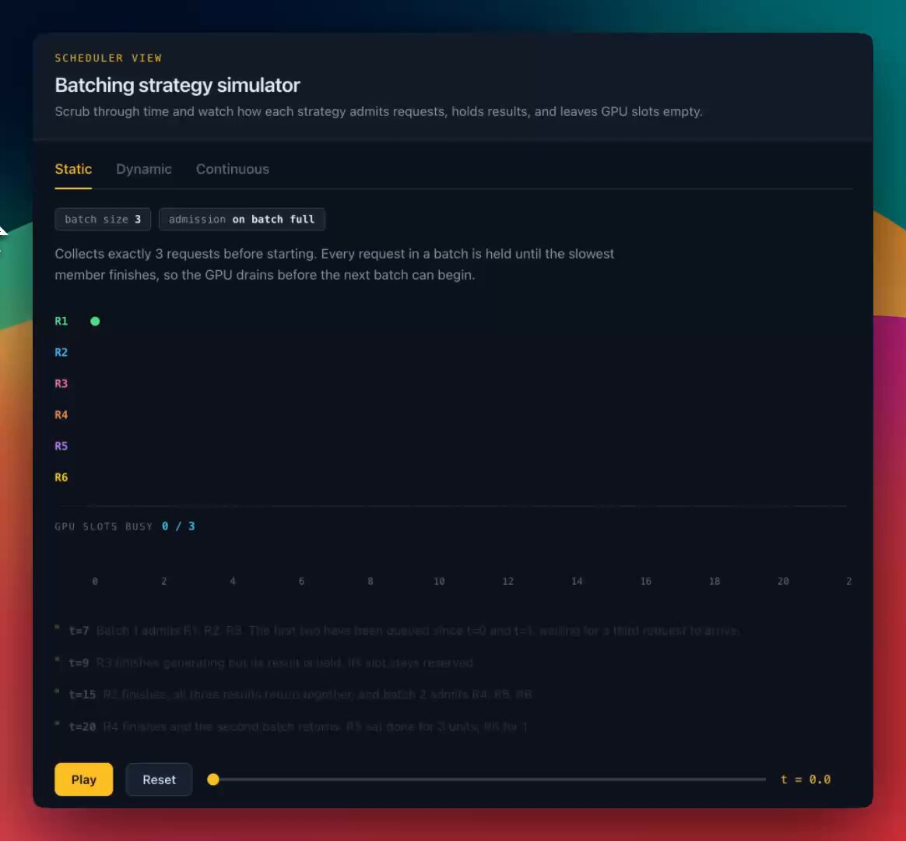
一块A100每秒大约执行312 teraFLOPs的BF16运算，并且每秒大约要从内存中搬移2 terabytes数据。解码（decoding）完全依赖于后面这个数字。
读取权重的成本占据了全部开销，计算单元则空转着等待。这段空闲的计算能力就是免费的容量，因此六十个请求组成的batch与只有一个请求的batch分摊的是同一次权重读取，于是吞吐量（throughput）上升了，而内存读取时间保持不变。
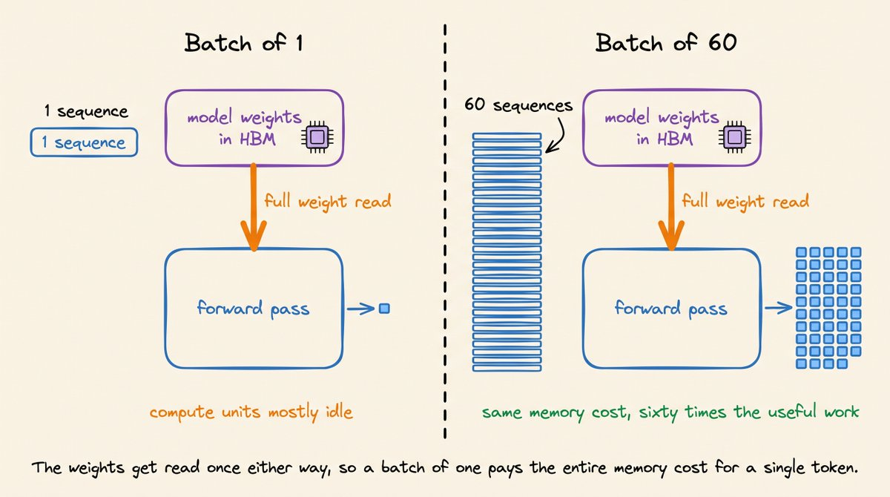
请注意，吞吐量会随batch大小先急剧攀升，然后趋于平缓。
在拐点以下，你是memory-bound（内存受限）的，此时批处理几乎等同于免费。
在拐点之上，你是compute-bound（计算受限）的，每增加一个序列都要花费时间。
拐点的位置会随模型、GPU以及序列长度而变化，所以要在你自己的硬件上测量它。
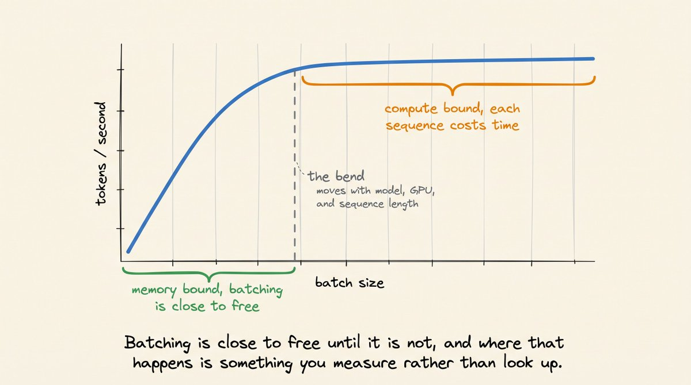
现在，你可能会想：如果批处理如此有效，为什么不尽可能多地批处理呢？
嗯，对于LLM而言，这比听起来要难得多。让我们来理解其中的原因。
批处理比LLM出现得还要早。对于分类器或嵌入（embedding）模型来说，它只是一个装箱（packing）问题。
把输入填充（pad）到一个共同的长度，把它们堆叠成一个张量，然后运行一次前向传播。
这样做可行，是因为三个条件成立：一次前向传播就产生完整的答案；没有任何一行依赖于另一行；每一行的成本在它开始之前就已经知道了。
但这对自回归（autoregressive）LLM来说并不成立。
解码（decoding）破坏了全部三个条件。
一次前向传播只产生一个token，而不是最终答案。一个400个token的回复需要400次前向传播。
每一行都依赖于它自身的历史。每一次前向传播都会写进该请求的KV cache，而下一次前向传播又会把它读回来。
成本直到结束才能确定。模型通过发出一个停止token（stop token）来决定何时结束，这个token可能在12个token之后出现，也可能在4,000个token之后出现。
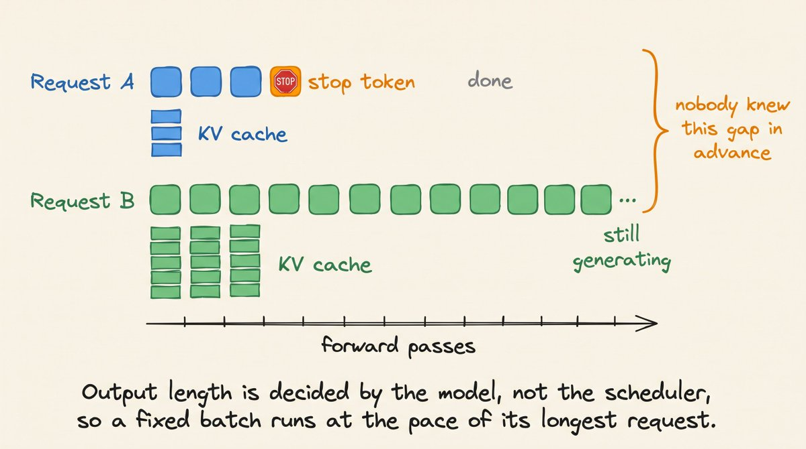
填充并不能解决这个问题。它只能拉平输入的宽度，而不能决定一个请求占用GPU多长时间。
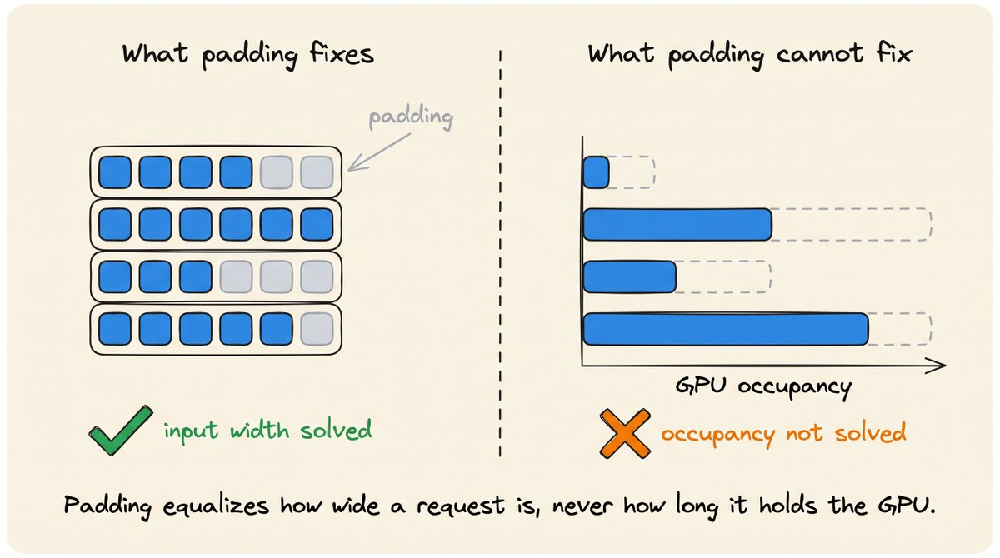
所以，在开始时固定的batch，其运行速度取决于其中运行最慢的那个成员。这三种策略就是对这一问题的三种回答，且按照它们对此问题处理力度的递增顺序排列。
最简单的答案是对此问题什么都不做。收集固定数量的请求，一起运行它们，并在最后一个请求完成时返回所有结果。
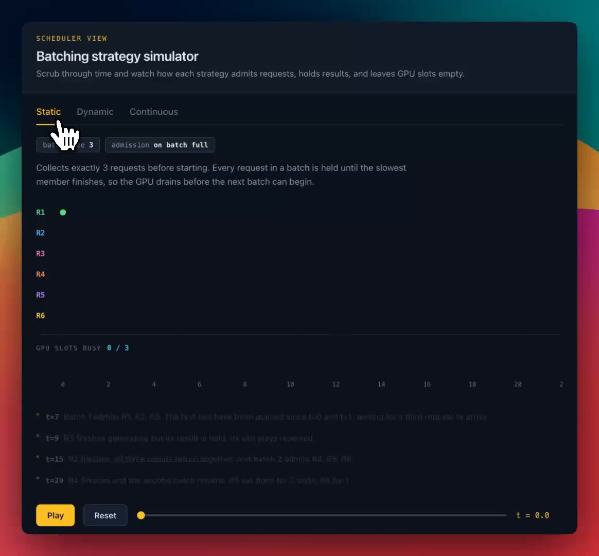
最终状态是这样的：
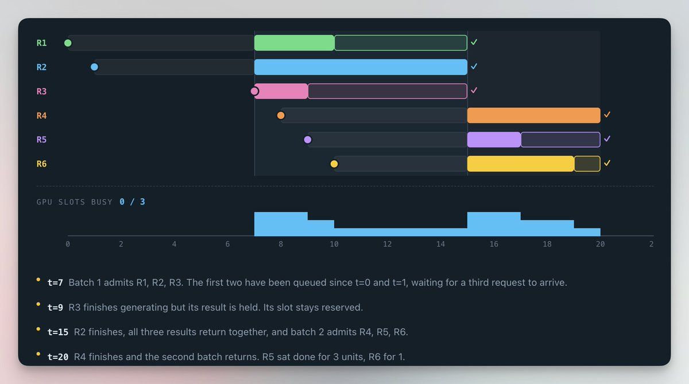
R3在t=9时停止生成，却一直占着GPU直到t=15，因为R2仍在运行。这会让你付出两倍的代价：
对一个结果早已完成（可由GPU释放）的用户来说，等待了六个单位时长的延迟
一个被占用的槽位，本可以被排队中的请求所使用
浪费随着输出差异（variance）的增大而扩大。Anyscale在40GB A100上对OPT-13B测量了这一点。拓宽输出长度的差异度，会让静态批处理的吞吐跌到大约每秒81个token，而连续批处理则保持了高出约一个数量级的水平。
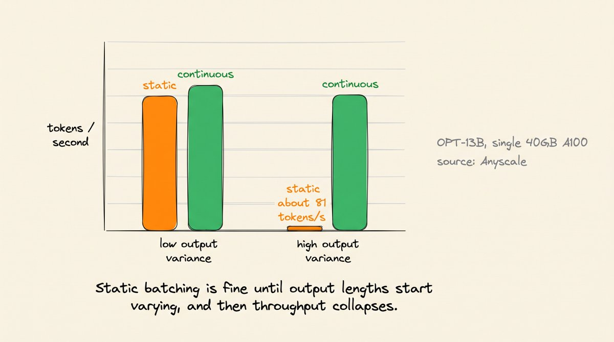
但有时它仍是正确的选择。静态批处理只有在输出长度差异较大时才显得不佳。去掉这一因素，运行最慢成员拖后腿的问题也随之消失。
分类、嵌入（embeddings）和打分（scoring）正好属于这类任务。每个请求都产生固定大小的输出：一个标签或一个向量：因此batch中的每个请求几乎在同一时间步完成，没有请求会等待掉队的慢序列。
对于这类工作，静态批处理更简单，而且不会损失任何东西。
下面是在vLLM中配置静态批处理的方法：
from vllmimportLLM,SamplingParams
llm=LLM(model="meta-llama/Llama-3.1-8B-Instruct")
outputs=llm.generate(prompts,SamplingParams(max_tokens=64))llm.generate一次性把整个工作负载交给引擎。限制max_tokens、保持prompt大小相近，这样每个序列都会在几乎相同的时间步完成。
👉 Hugging Face带batch_size参数的pipeline API也属于静态批处理。适用于评估脚本，但对于实时流量而言表现不佳。
静态批处理还有第二个代价：一个请求可能要等待很久才能进入一个batch。
如果batch size为8，但只有5个请求到达，那么这5个请求必须空等着，直到再有3个请求到来。
动态批处理加入了一个定时器。batch在达到大小上限时触发，或在窗口期满时触发，以先到者为准。
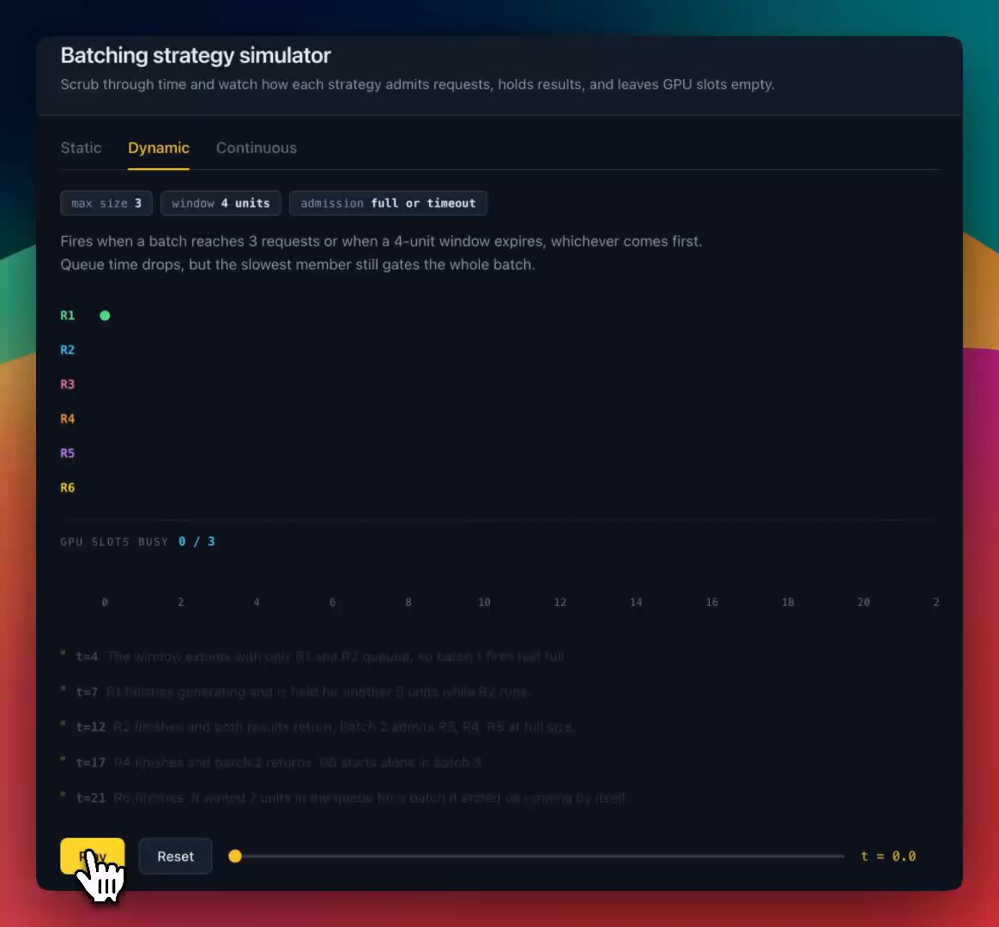
最终状态是这样的：
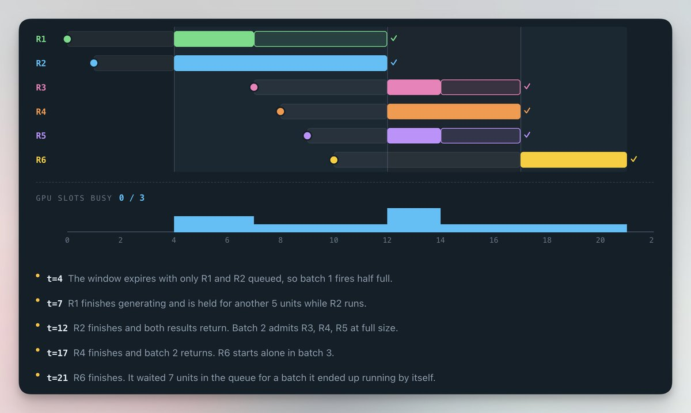
Batch 1在t=4（固定间隔）触发，只包含R1和R2，因为在第三个请求到来之前窗口已经期满。两者都比静态批处理所允许的时间提前了四个单位开始。
它缩短的是错误的等待。R1在t=7时完成，却仍然要等到t=12，因为R2还没有完成。
动态批处理每个batch决定一次，然后就把控制权交给引擎，直到每个成员都完成。对于输出固定的模型，这就是一个完整的解决方案，这就是Triton内置它的原因。
dynamic_batching {
preferred_batch_size: [4,8 ]
max_queue_delay_microseconds:100
}👉 preferred_batch_size列出调度器试图构成的各batch大小。max_queue_delay_microseconds则限定了一个请求最多等待多少时间以凑齐同行伙伴。
到目前为止的两种策略都把batch视为一个单元的工作，从启动开始一直运行到batch中的每个请求都完成为止。正是这个假设仍在让你付出代价，而连续批处理摒弃了它。
调度器运行一次迭代，收回控制权，然后再做一次决定。一旦某个序列发出它的最终token，它就会离开batch，而一个在等待的请求会在下一轮迭代中占住这个槽位。
batch的构成在每一次迭代都会发生变化，这就是为什么它被称为迭代级调度（iteration-level scheduling）。没有槽位会等待最慢的序列，因此即使输出长度的差异极大，GPU也能保持满载。
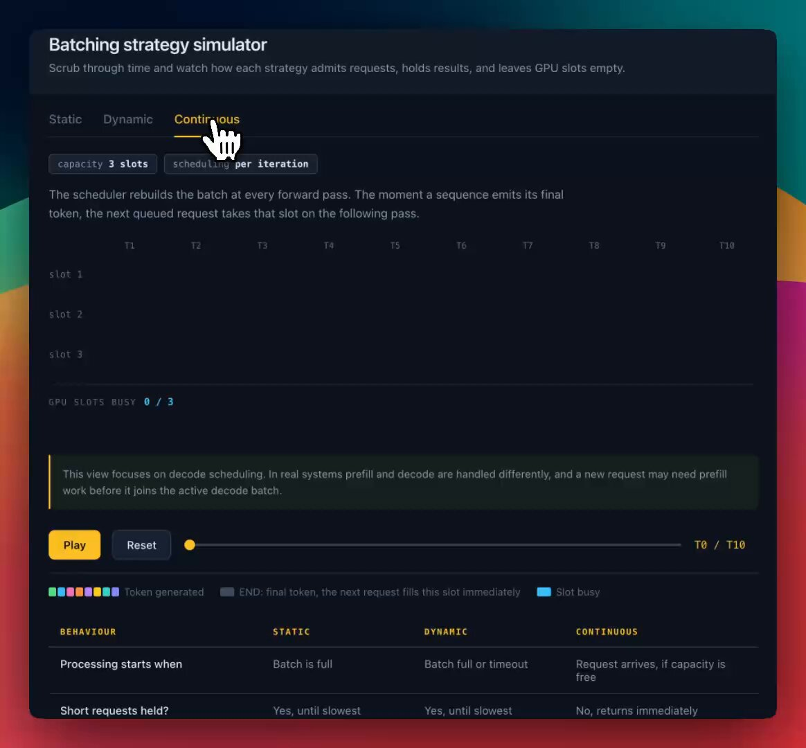
最终状态是这样的：
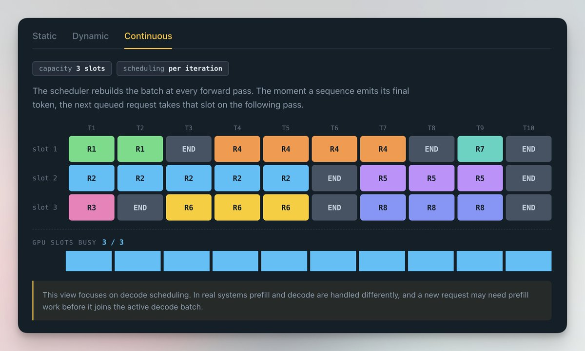
限制因素是内存，而不是算力。每个正在运行的序列都持有一个KV cache，它会随着每个token而增长；限制有多少序列能够放得进来的是这个cache，而不是那些数学计算本身。
在一块40GB A100上常驻一个13B模型时，同时只能容纳得下寥寥几个长序列。当内存池耗尽时，调度器会逐出（evict）一个正在运行的请求，并在之后重新计算它。
这看起来像是GPU没有足够的余量（headroom），而实际上它只是把同一次prefill计算了两遍而已。
👉 每个引擎都以不同的名字提供连续批处理：vLLM、SGLang和TGI称之为continuous batching，TensorRT-LLM称之为in-flight batching，LMDeploy则称之为persistent batching。
每一轮都重建批次确实解决了慢成员的问题，但同时又引入了一个新问题，而用户会把它感知为卡顿（stutter）。
一个新加入的请求会在一次迭代内完成预填充。一个32K-token的prompt就是一次大规模、计算密集的pass，所有正在活跃解码的请求都要在它后面等待，于是输出会在句子中间停顿下来：仅仅因为别人粘贴了一份超长的文档。
下面看看没有开启和开启分块预填充时的情况有何不同。
整体预填充（Whole prefill）：
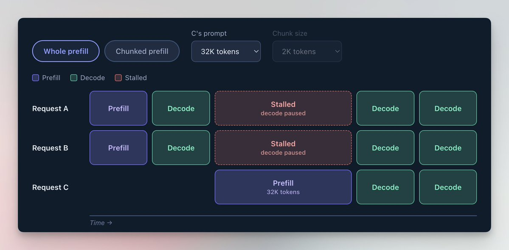
分块预填充（Chunked prefill）：
（请求C的prompt被拆分成每块2k tokens的较小块）
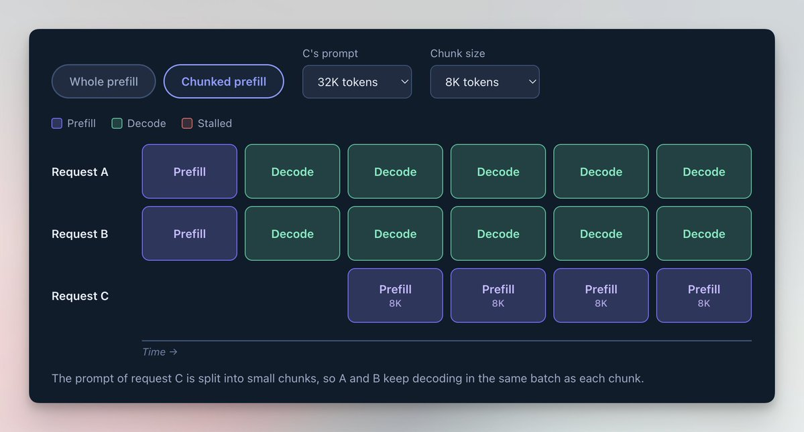
将prompt拆分到多次迭代中执行。分块预填充会把prompt拆成固定大小的token范围，安排在若干次pass中调度执行，每一步都扩展该请求的KV cache。
注意力（attention）计算并未改变，因为后面的块会关注前面块已处理过的内容。首个token会在最后一个块处理完之后才到来。
Prefill是计算密集（compute bound）的，而decode是内存密集（memory bound）的，因此一个同时包含两者的批次可以同时利用芯片的这两部分能力。
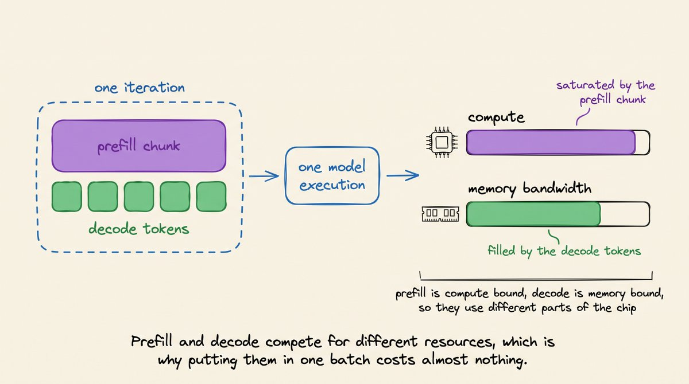
在选择数值时，请注意以下几点：
更小的块给调度器提供更多执行decode的机会，从而降低活跃请求的ITL（token间延迟）峰值。
更大的块能更高效地处理新来的prompt，通常还能改善TTFT（首token延迟），但那些正在活跃解码的请求可能在两两token之间等待更久。
块如果太小，会降低GPU利用率并增加注意力（attention）开销，因为后面的块必须重新读取前面块所创建的KV cache条目。
分块预填充在vLLM V1中默认开启，其中 --max-num-batched-tokens限制了每次迭代的token数量。SGLang则使用 --chunked-prefill-size，将其设为 -1即可禁用。
vLLM：
vllmservemeta-llama/Llama-3.1-8B-Instruct\
--max-num-batched-tokens8192SGLang：
sglangserve--model-pathmeta-llama/Llama-3.1-8B-Instruct\
--chunked-prefill-size8192👉 并不存在普适的最佳块大小。它取决于模型、GPU、你的prompt长度分布，以及你的SLO所衡量的究竟是哪个延迟指标。
这三种策略唯一的区别在于它们何时固定批次，而每一种都对应着一种不同的工作负载形态。
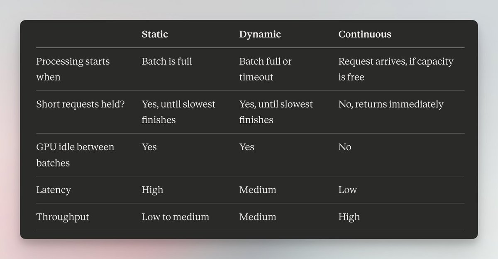
对于输出长度可变的实时流量，连续批处理是唯一能撑起局面的方案，而且每个主流引擎默认都会提供这一能力。
这篇文章通篇建立在一个关于GPU的事实之上：一次前向传播（forward pass）的瓶颈在于从内存中读取权重，而不是在于数学计算本身。
我写过一篇关于GPU工作原理的详细文章：
它从第一性原理出发，层层推导为什么内存与计算会相互竞争、为什么硬件中会存在这一差距，以及什么会让一个工作负载从一开始就变成内存密集（memory-bound）。它不需要任何前置知识，也是上面所有内容的天然前传。
敬请期待更多内容！
感谢阅读。
干杯！：)
参考：https://x.com/akshay_pachaar/status/2094490705024676272